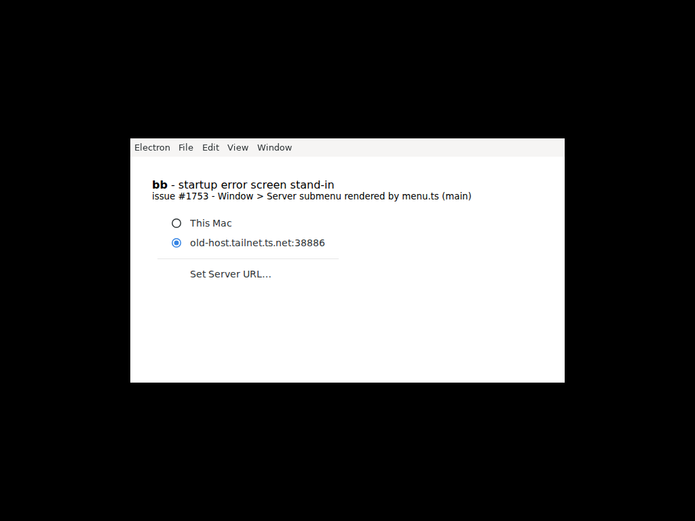
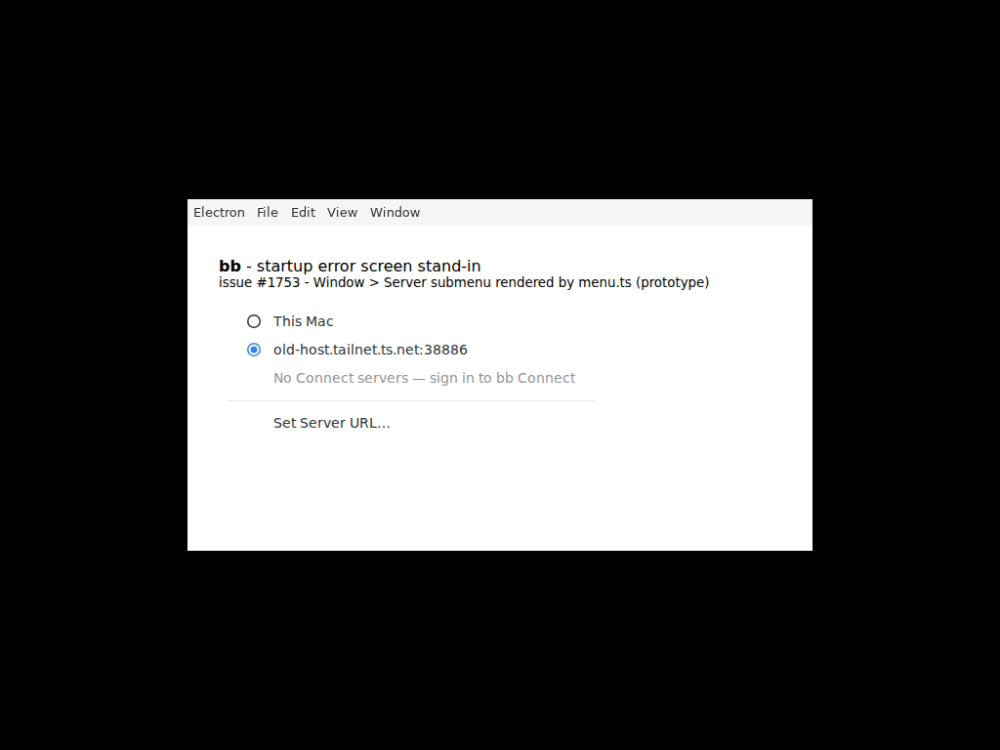

#1753 · Desktop: Server menu shows no Connect servers and no reason when the sync is skipped
TL;DR
Plain-language framing. The bb desktop app (Electron) has a Window ▸ Server menu that lists "This Mac" (the bb server bundled with the app), any bb servers on your bb Connect account (a hosted relay; the desktop learns the list by a periodic "sync"), an optional custom URL, and "Set Server URL…". The Connect list has two sources: the local bundled server's connect plugin (POST /api/v1/plugins/connect/rpc/listAccountServers), or, when no local server is running, a credential the desktop cached from an earlier Connect sign-in.
The reporter's app was pointed at a saved custom URL that stopped answering. In that state the local server is not started, and their app had never signed in to Connect, so the sync has no source at all. createConnectServerSync then returns early and only writes one line to the desktop log ("connect server sync skipped (plugin disabled, not paired, or no local server and no cached credential)"). Nothing is passed to the menu builder, so buildMenuServerItems() maps an empty array and the submenu shows just "This Mac", the dead custom host, a separator and "Set Server URL…". "We could not fetch your servers" and "you have no servers" are indistinguishable. This is confirmed on 16ceb3a54 by a failing unit test at the exact code path and by rendering the real menu.ts template inside Electron (screenshots below). It is a deliberate "silent no-op" design (see the doc comment on fetchConnectAccountServers), not a regression; nothing on origin/main after the base commit touches it. Note also that the reason is available on the wire from the local server (HTTP 503 "not running (status: disabled)" vs 500 {code:"handler_error",message:"not_paired"}), and the desktop discards it — the reporter's note that the prototype cannot tell "plugin disabled" from "not paired" is a limitation of the desktop parser, not of the server.
The reporter's prototype branch (not a PR) exposes a getSkipReason() and renders a disabled note. Its data model is fine but it has a trigger defect: a skipped sync never rebuilds the menu. In the reporter's exact startup flow (saved custom URL that no longer answers) the startup connectServerSync.syncNow() is never even reached — applyServerTarget() awaits loadURL on the dead host, which rejects and unwinds to the "Could not open bb" error screen — so the first sync only runs from the menu-will-show hook of the already-built Window ▸ Server popup, and its skip does not rebuild anything. The note would therefore not be visible when it is needed (details in the review section).
Claims vs findings
| Claim | Status | Evidence |
|---|---|---|
With no local runtime and no cached credential, Window ▸ Server lists no Connect servers and gives no reason | Verified | fetchServers() returns null at connect-server-sync.ts:196-199; runSync() only logs; onServers is never called; createServerMenuItems renders no placeholder. Repro test #1 and #2 fail on main; screenshot 1753-server-menu-main.png. |
| The skip reason "only reaches a log file" | Verified | runSync(): log?.("connect server sync skipped (…)") once per failure streak; the returned ConnectServerSync object has only start/stop/onRuntimeReady/onListRequested/syncNow (test #1 pins that exact five-member surface and passes on main; nothing else is invoked when the sync is skipped). |
| The menu "offered This Mac and Set Server URL… and nothing else" | Partially inaccurate | With a saved custom target, buildMenuServerItems() (main.ts:663-671) also inserts a checked radio item for the custom host. The reporter probably omitted it. Not material to the bug. |
| Fallback path "requires a cached credential and returns null without one" | Verified | connect-server-sync.ts:189-199. The only way to obtain that credential is ensureDesktopMachineEnrolled(), which runs after a successful Connect sign-in via the local server (main.ts:1093-1096). |
Their account has a paired Connect server (per bb connect status on the Ubuntu server) | Unverifiable, and irrelevant to the desktop | Pairing lives on the Ubuntu server. The Mac's bundled server is a different bb instance; unless it is paired to the same account, even "This Mac" would yield not_paired. So "sign in to bb Connect" from this Mac requires pairing the Mac's local server first (see Root cause, deeper issue). |
Reporter's prototype: fetchConnectAccountServers "does not report which it was" (plugin disabled vs not paired) | Verified as written, but the information is on the wire | Live probe on my dev server: disabled → HTTP 503 {"ok":false,"error":"plugin \"connect\" is not running (status: disabled)"}; enabled but unpaired → HTTP 500 {"ok":false,"error":{"code":"handler_error","message":"not_paired"}}. fetchConnectAccountServers parses and drops it (connect-server-sync.ts:100-103). |
| Bug still present on latest main | Verified | git log 16ceb3a54..origin/main -- apps/desktop plugins/connect is empty (5 commits ahead, none touch these paths). |
Environment
- bb
16ceb3a54(main, 2026-08-18), worktree/home/USER/projects/bb/.claude/worktrees/wf_242c3e11-a10-31, desktop package version 0.38.0 (same as the reporter's server version). - Linux 7.0.0-29-generic x86_64, node v24.18.0, Electron 41.7.0 (from
apps/desktop/node_modules), Xvfb for the headless menu render. macOS was not available; the menu template is platform-independent apart from theisMacrole items. - Dev instance (only used for the wire-shape probe): app
:15801, server:23801, daemon:31801, data dir/home/USER/.bb-dev/projects-bb-.claude-worktrees-wf_242c3e11-a10-31-ec4201c132ec. Connect plugin enabled but unpaired.
Minimal reproduction
A. Unit test at the exact code path (test 2 fails on main)
File: 1753/repro/issue-1753-repro.test.ts (copy to apps/desktop/test/). Output: vitest-main.log. Test 1 passes and documents the current behaviour (no request, no onServers, exactly one log line, and the complete ConnectServerSync surface — onListRequested / onRuntimeReady / start / stop / syncNow — with nothing that exposes the skip). Test 2 is the failing repro: it builds the Server submenu with the real menu.ts for the reporter's state and asserts the disabled explanatory row the issue asks for.
$ cp /tmp/bb-reports/issues/1753/repro/issue-1753-repro.test.ts apps/desktop/test/
$ cd apps/desktop && pnpm exec vitest run test/issue-1753-repro.test.ts
❯ test/issue-1753-repro.test.ts (2 tests | 1 failed)
× the Server submenu built for that state has no item explaining the missing Connect servers
FAIL test/issue-1753-repro.test.ts > issue #1753 — skipped Connect sync leaves the Server menu silent > the Server submenu built for that state has no item explaining the missing Connect servers
AssertionError: expected false to be true // Object.is equality
❯ test/issue-1753-repro.test.ts:117:7
115| (item) => item.enabled === false && /connect/iu.test(item.labe…
117| ).toBe(true);
Test Files 1 failed (1)
Tests 1 failed | 1 passed (2)
What each assertion shows. Test 1: with getLocalServerUrl() === null and getCredential() === null (the reporter's state) the sync performs no request, never calls onServers, and its only output is the log line — every assertion passes, documenting the silence and pinning the complete five-member ConnectServerSync surface (no status accessor, no skip callback) — a fix of any shape will change that surface, so this test is documentation, not the failing repro. Test 2: the Window ▸ Server submenu built by the real buildApplicationMenuTemplate for that state is exactly ["This Mac", "old-host.tailnet.ts.net:38886", <separator>, "Set Server URL…"] (passes) and contains no disabled/explanatory row (fails).
// Repro for get-bb/bb#1753: Window ▸ Server lists no Connect servers and no
// reason when the sync is skipped (no local runtime, no cached credential).
//
// Test 1 PASSES on main 16ceb3a54 and documents the current behaviour: the skip
// is a log line only and the ConnectServerSync surface has no way to observe it
// (whatever shape a fix picks -- callback, result value, accessor -- would
// change the surface pinned here). Test 2 FAILS on main: it asserts the
// behaviour the issue asks for (a visible reason in the Server submenu).
import { describe, expect, it, vi } from "vitest";
import type { MenuItemConstructorOptions } from "electron";
vi.mock("electron", () => ({
app: { name: "bb" },
Menu: { sendActionToFirstResponder: vi.fn() },
}));
import { createConnectServerSync } from "../src/connect-server-sync.js";
import {
buildApplicationMenuTemplate,
SET_SERVER_URL_MENU_LABEL,
type InstallApplicationMenuArgs,
} from "../src/menu.js";
function findServerSubmenu(
template: MenuItemConstructorOptions[],
): MenuItemConstructorOptions[] {
const windowMenu = template.find((item) => item.label === "Window");
const windowSubmenu = windowMenu?.submenu as MenuItemConstructorOptions[];
const serverMenu = windowSubmenu.find((item) => item.label === "Server");
return serverMenu?.submenu as MenuItemConstructorOptions[];
}
describe("issue #1753 — skipped Connect sync leaves the Server menu silent", () => {
it("the sync only logs the skip; nothing observable tells the menu why the list is empty", async () => {
const logs: string[] = [];
const onServers = vi.fn();
const gateFetchImpl = vi.fn(async () => new Response("{}"));
const fetchImpl = vi.fn();
const sync = createConnectServerSync({
// Reporter's state: saved custom target => no local runtime; the app
// never authenticated to a Connect target => no cached credential.
getCredential: () => null,
getLocalServerUrl: () => null,
gateFetchImpl,
fetchImpl,
onServers,
onUnauthorized: () => undefined,
log: (m) => logs.push(m),
setIntervalFn: () => 0,
clearIntervalFn: () => undefined,
});
await sync.syncNow();
// Nothing was even attempted, and the consumer is never told.
expect(fetchImpl).not.toHaveBeenCalled();
expect(gateFetchImpl).not.toHaveBeenCalled();
expect(onServers).not.toHaveBeenCalled();
// The reason exists — but only as a log line ...
expect(logs).toEqual([
"connect server sync skipped (plugin disabled, not paired, or no local server and no cached credential)",
]);
// ... and the public ConnectServerSync surface exposes no way to read it:
// this is the complete surface on main (no status accessor, and the only
// callback, onServers, was not invoked above).
expect(Object.keys(sync).sort()).toEqual([
"onListRequested",
"onRuntimeReady",
"start",
"stop",
"syncNow",
]);
});
it("the Server submenu built for that state has no item explaining the missing Connect servers", () => {
// Exactly what main.ts#buildMenuServerItems produces for the reporter's
// state (builtin + the saved custom target; connectAccountServers = []).
const args: InstallApplicationMenuArgs = {
accelerators: {
closeWindowOrSideTab: undefined,
createNewWindow: undefined,
openNewTab: undefined,
openNewThread: undefined,
openSettings: undefined,
},
closeWindowOrSideTab: () => {},
createNewWindow: () => {},
isMac: true,
openNewTab: () => {},
openNewThread: () => {},
openServerDaemonLogs: () => {},
openSettings: () => {},
reloadWindow: () => {},
selectServer: () => {},
serverDaemonLogsMenuEnabled: false,
servers: [
{ checked: false, id: "builtin", name: "This Mac" },
{ checked: true, id: "custom", name: "old-host.tailnet.ts.net:38886" },
],
setServerUrl: () => {},
};
const submenu = findServerSubmenu(buildApplicationMenuTemplate(args));
const labels = submenu.map((item) => item.label ?? `<${item.type}>`);
// What main renders (this part passes and documents the current output):
expect(labels).toEqual([
"This Mac",
"old-host.tailnet.ts.net:38886",
"<separator>",
SET_SERVER_URL_MENU_LABEL,
]);
// What the issue asks for — FAILS on main: no disabled/explanatory row.
expect(
submenu.some(
(item) => item.enabled === false && /connect/iu.test(item.label ?? ""),
),
).toBe(true);
});
});
B. What the menu looks like (real menu.ts, real Electron, headless)
Harness: 1753/repro/menu-shot/ — build.sh bundles the unmodified apps/desktop/src/menu.ts with esbuild, main.cjs feeds it the servers array that main.ts#buildMenuServerItems() produces for the reporter's state (builtin + saved custom target, connectAccountServers = []), pops the Window ▸ Server submenu and grabs the X screen via desktopCapturer. The window body is a stand-in for the startup error page; only the menu is the evidence.
Prerequisites. Linux with xvfb-run (package xvfb) on PATH; a bb worktree at 16ceb3a54 after pnpm install (that provides both esbuild, resolved via pnpm exec from apps/desktop, and the Electron binary at apps/desktop/node_modules/electron/dist/electron). build.sh regenerates menu-shot/menu.bundle.js in place (a re-run at the same commit produces a byte-identical bundle); the prototype variant uses the pre-built menu.prototype.bundle.js.
$ export BB_REPO=/abs/path/to/bb # worktree at 16ceb3a54, after pnpm install $ /tmp/bb-reports/issues/1753/repro/menu-shot/build.sh $ /tmp/bb-reports/issues/1753/repro/menu-shot/run.sh /tmp/bb-reports/issues/assets/1753-server-menu-main.png main wrote …/1753-server-menu-main.png labels: This Mac | old-host.tailnet.ts.net:38886 | <separator> | Set Server URL…


menu.ts (bundled from Joesirven/bb@prototype/connect-server-list-skip-reason, note passed explicitly): the disabled greyed row "No Connect servers — sign in to bb Connect" is what the issue asks for. This only shows what menu.ts renders when it receives the note; whether main.ts would pass it at the right time is the problem discussed in the review.C. The reason is available on the wire (dev instance probe)
$ curl -s -i -X POST http://localhost:23801/api/v1/plugins/connect/rpc/listAccountServers -H 'content-type: application/json' -d null
HTTP/1.1 500 Internal Server Error
{"ok":false,"error":{"code":"handler_error","message":"not_paired"}}
$ BB_SERVER_URL=http://localhost:23801 pnpm bb:dev plugin disable connect
$ curl -s -i -X POST http://localhost:23801/api/v1/plugins/connect/rpc/listAccountServers -H 'content-type: application/json' -d null
HTTP/1.1 503 Service Unavailable
{"ok":false,"error":"plugin \"connect\" is not running (status: disabled)"}
Root cause
Mechanism. The Connect list has exactly two sources and both are unavailable in the reporter's state:
- Saved target is
custom→runDesktopApptakes the "no local bb server on this Mac" branch (main.ts#L2280-L2289):await applyServerTarget(); connectServerSync.syncNow().currentRuntimestaysnull, sogetLocalServerUrl()isnull. In the reporter's exact scenario the startupsyncNow()is in fact never reached:applyServerTarget()'s custom branch doesawait loadWindowUrl({ url: target.url })(main.ts#L1226-L1235),BrowserWindow.loadURLrejects for an unreachable host andloadUrlIntoWindowrethrows everything exceptERR_ABORTED(desktop-window-factory.ts#L197-L210), so the promise unwinds paststartRemoteSystemConfigSync, past therefreshApplicationMenu()at L1235 and pastsyncNow()at L2288 into therunDesktopApp().catchthat shows "Could not open bb" (main.ts#L2292-L2301; this is #1494). Verified empirically with the same Electron 41.7.0 the desktop uses (1753/repro/loadurl-probe/):loadURL(http://old-host.tailnet.ts.net:38886/) REJECTED after 315ms: ERR_NAME_NOT_RESOLVED (-105),loadURL(http://127.0.0.1:45999/) REJECTED after 79ms: ERR_CONNECTION_REFUSED (-102). The only menu ever built is the one from main.ts#L2272 (before any sync), and the first sync runs only when the user opensWindow ▸ Server:menu-will-show → onServerMenuWillShow → connectServerSync.onListRequested()(main.ts#L757-L761) — while the popup is already built from the old template. - The desktop's own credential is only ever written by
ensureDesktopMachineEnrolled()after a successful Connect sign-in through the local server (main.ts#L1086-L1097). Never signed in →cachedConnectCredential === null.
So fetchServers() returns null before making any request (connect-server-sync.ts#L189-L199), and runSync() treats null as "log once, do nothing" (#L211-L226):
const result = await fetchServers();
if (result === null) {
if (!loggedFailure) {
loggedFailure = true;
log?.("connect server sync skipped (plugin disabled, not paired, or no local server and no cached credential)");
}
return; // <- consumer is never told
}
loggedFailure = false;
args.onServers(selectTargetableConnectServers(result));
The menu is built from connectAccountServers (initially []) plus the persisted selection (main.ts#L626-L639) and createServerMenuItems has no empty-state affordance (menu.ts#L65-L88). Hence the symptom.
This is by design, not a regression. The doc comment on fetchConnectAccountServers says the null return "callers treat … as a silent no-op" (#L62-L70) and the existing test "stays quiet when the app has no credential" (test/connect-server-sync.test.ts:287) pins the silence. Three distinct causes are deliberately collapsed: local-server RPC failure (fetchConnectAccountServers even parses rpcFailureSchema and discards the result at #L100-L103), no credential, and gate errors.
Deeper issue. Even a perfect "sign in to bb Connect" affordance would not have helped this reporter directly: their pairing is on the Ubuntu server, and the desktop can only obtain a credential through its own local server's pairing secret. From the Mac, the remedy is: switch to "This Mac" → pair that local server to the same account (bb connect / Settings) → the local RPC lists the account's servers → pick the Ubuntu one → the desktop enrolls its own credential. None of that is discoverable from the menu, which is the real UX gap; #1494 (dead-end startup error) makes it worse.
Proposed fix (first principles)
- Make the sync's outcome a value, not a log line. In
connect-server-sync.ts, havefetchServers()return a discriminated result and turn the callback intoonSyncResult(result)(or keeponServersand addonSkipped(reason)). Reasons should be derived from what the code already knows:no-local-server-no-credential;local-plugin-disabled(RPC HTTP 503) vslocal-not-paired(RPC{code:"handler_error", message:"not_paired"}) vslocal-unreachable(fetch threw) — parse them infetchConnectAccountServersinstead of discardingrpcFailureSchema;gate-unauthorized/gate-unreachablefromConnectListError.code. Keep the log line, but derive it from the reason. - Rebuild the menu on every sync outcome, not only on success. In
main.ts, store the reason next toconnectAccountServersand callrefreshApplicationMenu()from the skipped callback too. Otherwise the note lags one refresh behind (this is the defect in the prototype). Note that in the reporter's flow the first sync fires frommenu-will-showwhile the popup is already open, so the refresh only helps the next open; to show the note at first open, also runsyncNow()from therunDesktopApp().catch/loadStartupErrorpath (or fix #1494 soapplyServerTarget()handles the unreachable target and reachessyncNow()). - Render it in
menu.tsas a disabled item only when the connect list is empty and a reason is present. Labels: "No Connect servers — sign in to bb Connect (needs the local server)" for no-credential, "— bb Connect not paired on This Mac" for not_paired, "— Connect plugin disabled" for 503, "— could not reach bb Connect" for network. Update the existing test that pins silence and add a menu test. - Optional but the actual remedy: a clickable "Sign in to bb Connect…" that switches to builtin and opens the connect settings/pairing UI. That is a product decision (CONTRIBUTING sign-off), so ship 1–3 first.
Risks: none on the wire (desktop ↔ local server RPC shape is unchanged; no HOST_DAEMON_PROTOCOL_VERSION concern). Electron menus are immutable after build, so the refresh in step 2 is what makes the row appear; if it is skipped, the row shows only after an unrelated rebuild.
Prototype review — Joesirven/bb@prototype/connect-server-list-skip-reason (no PR opened)
Diff saved as 1753/repro/prototype-branch.diff (1 commit 3e429e6, merge-base 652eda7ee, touches connect-server-sync.ts, main.ts, menu.ts; no tests). It adds getSkipReason(): "no-credential" | "unauthorized" | "unavailable" | null, an optional serversNote in InstallApplicationMenuArgs rendered as a disabled item, and buildMenuServersNote() in main.ts.
| Finding | Severity | Where |
|---|---|---|
Nothing rebuilds the menu after a skipped sync, so the note is never shown in the reporter's own flow. The prototype only reads getSkipReason() inside buildMenuServersNote() at menu-build time; a skipped runSync() still returns without calling anything that triggers refreshApplicationMenu(). In the reporter's scenario (saved custom URL, host unreachable) the only menu build is refreshApplicationMenu() at startup (base main.ts:2272, skipReason null); applyServerTarget() then rejects on loadURL (main.ts:1229 → 2292 catch), so neither the refresh at 1235, startRemoteSystemConfigSync (whose poll at 908 would otherwise rebuild) nor syncNow() at 2288 ever run (loadurl-probe above; #1494). The first sync happens from menu-will-show (main.ts:757-761) when the user opens Window ▸ Server: it sets skipReason = "no-credential" into a popup already built without it, and no later rebuild is triggered by the skip. So the disabled row appears only after some unrelated rebuild (e.g. switching to "This Mac"), by which point it is stale advice. Fix: make the sync report skips through a callback/result and refresh the menu from it, not by polling getSkipReason() at build time. | High (feature does not show when needed) | prototype main.ts buildMenuServersNote; base main.ts:2272, 1226-1235, 2280-2301, 757-761; desktop-window-factory.ts:197-210 |
skipReason = "unavailable" is assigned before the awaited fetch and stays set while a request is in flight; a menu rebuild during that window (e.g. runtime attach → setCurrentRuntime → refresh) shows "could not reach bb Connect" for a sync that has not finished. Set the reason from the outcome instead. | Medium | prototype connect-server-sync.ts fetchServers() |
"unavailable" collapses plugin-disabled / not-paired / server-down / gate network error and labels them all "could not reach bb Connect", which is wrong for the two most common cases (server reachable, plugin says 503 or not_paired). The information is on the wire (section C). | Medium | prototype main.ts label map |
serversNote?: string | null — optional and nullable field to hide a default, contrary to AGENTS.md ("Optional contract fields … Do not use optional or nullable fields to hide defaults"). Make it string | null, required. | Low | prototype menu.ts InstallApplicationMenuArgs |
| No tests; the existing "stays quiet when the app has no credential" test still passes but no test pins the new reason or the menu row. | Low | — |
Tests I ran: bundled the prototype menu.ts and rendered it (screenshot above) — menu.ts part behaves as described. I did not run the prototype's main.ts (it needs a live Electron app on a macOS-like flow); the trigger finding is from reading the base main.ts control flow plus the empirical loadURL-rejects probe, and I have high confidence in it. Verdict: REQUEST CHANGES (right idea, wrong trigger; would not have shown for the reporter's own case).
Related issues
- #1494 — Desktop: unreachable saved remote server target leaves a dead-end startup error (OPEN). Same startup flow and the same rejected
loadURL: it is why the startupsyncNow()never runs in the reporter's scenario, and the menu this report is about is the only escape from that screen. - CHANGELOG 0.36.0 "The server now default binds to loopback" — the migration that broke the reporter's saved
…ts.net:38886target.
Appendix
Commands run
git checkout 16ceb3a54 && pnpm install --frozen-lockfile --prefer-offline pnpm exec turbo run build --filter=@bb/desktop cd apps/desktop && pnpm exec vitest run test/issue-1753-repro.test.ts # -> 1753/repro/vitest-main.log scripts/bb-dev-app current # server :23801 curl -s -i -X POST http://localhost:23801/api/v1/plugins/connect/rpc/listAccountServers -H 'content-type: application/json' -d null BB_SERVER_URL=http://localhost:23801 pnpm bb:dev plugin disable connect ; (same curl) ; plugin enable connect gh api repos/Joesirven/bb/compare/main...prototype/connect-server-list-skip-reason # -> 1753/repro/prototype-branch.diff BB_REPO=<worktree> 1753/repro/menu-shot/build.sh BB_REPO=<worktree> 1753/repro/menu-shot/run.sh assets/1753-server-menu-main.png main BB_REPO=<worktree> 1753/repro/menu-shot/run.sh assets/1753-server-menu-prototype.png prototype BB_REPO=<worktree> 1753/repro/loadurl-probe/run.sh # -> ERR_NAME_NOT_RESOLVED (revision) BB_REPO=<worktree> 1753/repro/loadurl-probe/run.sh http://127.0.0.1:45999/ # -> ERR_CONNECTION_REFUSED (revision) git fetch origin main && git log 16ceb3a54..origin/main --oneline -- apps/desktop plugins/connect # (empty) pnpm dev:stop
Files
issue-1753-repro.test.ts,vitest-main.logmenu-shot/main.cjs,build.sh,run.sh,menu.prototype.ts(fetched from the reporter's branch)prototype-branch.diff,reenable-connect.shloadurl-probe/main.cjs,run.sh,output.log— ElectronloadURLrejection probe added in the revision
Full log line the desktop writes (base)
[desktop] connect server sync skipped (plugin disabled, not paired, or no local server and no cached credential)
Verification
An independent verifier followed this report literally in a fresh worktree at 16ceb3a54: ran repro A (both tests failed with the quoted assertions, all preceding assertions passed), rebuilt the menu bundle with build.sh (byte-identical to the shipped one), rendered the Server submenu with run.sh under Xvfb (labels and PNG matched assets/1753-server-menu-main.png), checked both PNGs against their captions, checked every code excerpt/permalink against the file at 16ceb3a54, and confirmed git log 16ceb3a54..origin/main -- apps/desktop plugins/connect is empty. Section C wire probes were corroborated from server code rather than re-run.
Findings and what changed in this revision:
- Major — startup control flow was misdescribed. The original text said the reporter's flow reaches
refreshApplicationMenu()(main.ts:1235) and thenconnectServerSync.syncNow()(main.ts:2288). For an unreachable custom URL neither runs:applyServerTarget()rejects onloadURLand unwinds to the "Could not open bb" handler (#1494). Re-checked againstmain.ts/desktop-window-factory.tsat the base commit and proven empirically with a new Electron probe (1753/repro/loadurl-probe/:ERR_NAME_NOT_RESOLVEDfor the reporter's kind of host,ERR_CONNECTION_REFUSEDfor a closed port). The Root-cause mechanism bullet, TL;DR, prototype-review finding #1 (now cites main.ts:2272 / 1226-1235 / 2280-2301 / 757-761), proposed-fix step 2 and the #1494 entry were rewritten accordingly. Conclusions (silent null; prototype note not shown when needed) are unchanged and, if anything, stronger. - Minor — test 1 asserted the prototype's API name.
expect(Object.keys(sync)).toContain("getSkipReason")encoded one remedy. Replaced with an exact pin of the current five-member surface, so test 1 now passes and documents the silence while test 2 remains the failing repro (vitest-main.logregenerated: 1 failed | 1 passed). - Minor — repro B prerequisites. Added the Xvfb / esbuild / Electron-binary prerequisites and the note that
build.shrewritesmenu.bundle.jsin place.